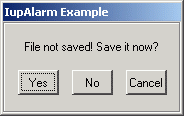

Shows a modal dialog containing a message and up to three buttons.
int IupAlarm(char *t, char *m, char *b1, char *b2, char *b3); [in C] iup.Alarm(t, m, b1, b2, b3: string) -> (button: number) [in Lua]t: Dialog’s title
m: Message
b1: Text of the first button
b2: Text of the second button (optional)
b3: Text of the third button (optional)
This function returns the number (1, 2, 3) of the button selected by the user, or 0 (nil in IupLua) if the dialog could not be opened.
This function shows a dialog centralized on the screen, with the message and the buttons. The ‘\n’ character can be added to the message to indicate line change.
A button is not shown if its parameter is NULL. This is valid only for b2 and b3.
Button 1 is set as the "DEFAULTENTER" and "DEFAULTESC". If Button 2 exists it is set as the "DEFAULTESC". If Button 3 exists it is set as the "DEFAULTESC".
The dialog uses a global attribute called "PARENTDIALOG" as the parent dialog if it is defined. It also uses a global attribute called "ICON" as the dialog icon if it is defined.
